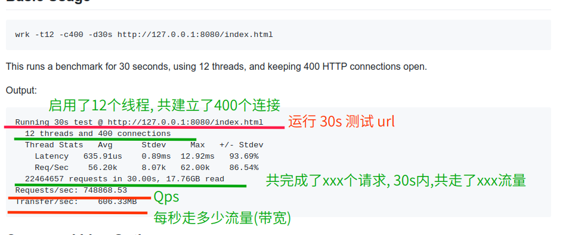

性能测试工具，如 Apache ab, Apache JMeter (互联网公司用的较多)，LoadRunner 等。
我们今天主要说一说轻量级性能测试工具 wrk。
wrk是一个http的压测工具,底层封装了epoll(linux)和kqueue(bsd),所以性能特别好
再来说说 wrk 的优势：
- 轻量级性能测试工具;
- 安装简单（相对 Apache ab 来说）;
- 学习曲线基本为零，几分钟就能学会咋用了；
- 基于系统自带的高性能 I/O 机制，如 epoll, kqueue, 利用异步的事件驱动框架，通过很少的线程就可以压出很大的并发量；
劣势
wrk 目前仅支持单机压测，后续也不太可能支持多机器对目标机压测，因为它本身的定位，并不是用来取代 JMeter, LoadRunner 等专业的测试工具，wrk 提供的功能，对我们后端开发人员来说，应付日常接口性能验证还是比较友好的。
安装
git clone https://github.com/wg/wrk.git
cd wrk
make
# 将可执行文件移动到 /usr/local/bin 位置
sudo cp wrk /usr/local/bin
1
2
3
4
5
2
3
4
5
# Basic Usage
wrk -t12 -c400 -d30s http://127.0.0.1:8080/index.html
This runs a benchmark for 30 seconds, using 12 threads, and keeping 400 HTTP connections open.
Output:
Running 30s test @ http://127.0.0.1:8080/index.html
12 threads and 400 connections
Thread Stats Avg Stdev Max +/- Stdev
Latency 635.91us 0.89ms 12.92ms 93.69%
Req/Sec 56.20k 8.07k 62.00k 86.54%
22464657 requests in 30.00s, 17.76GB read
Requests/sec: 748868.53
Transfer/sec: 606.33MB
# Command Line Options
-c, --connections: total number of HTTP connections to keep open with
each thread handling N = connections/threads
-d, --duration: duration of the test, e.g. 2s, 2m, 2h
-t, --threads: total number of threads to use
-s, --script: LuaJIT script, see SCRIPTING
-H, --header: HTTP header to add to request, e.g. "User-Agent: wrk"
--latency: print detailed latency statistics
--timeout: record a timeout if a response is not received within
this amount of time.
解释一下每个指标代表什么意思?
Running 30s test @ http://www.baidu.com （压测时间30s）
12 threads and 400 connections （共12个测试线程，400个连接）
（平均值） （标准差） （最大值）（正负一个标准差所占比例）
Thread Stats Avg Stdev Max +/- Stdev
（延迟）
Latency 386.32ms 380.75ms 2.00s 86.66%
(每秒请求数)
Req/Sec 17.06 13.91 252.00 87.89%
Latency Distribution （延迟分布）
50% 218.31ms
75% 520.60ms
90% 955.08ms
99% 1.93s
4922 requests in 30.06s, 73.86MB read (30.06s内处理了4922个请求，耗费流量73.86MB)
Socket errors: connect 0, read 0, write 0, timeout 311 (发生错误数)
Requests/sec: 163.76 (QPS 163.76,即平均每秒处理请求数为163.76)
Transfer/sec: 2.46MB (平均每秒流量2.46MB)
1
2
3
4
5
6
7
8
9
10
11
12
13
14
15
16
17
2
3
4
5
6
7
8
9
10
11
12
13
14
15
16
17
